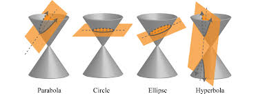
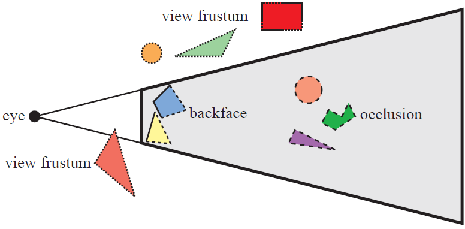
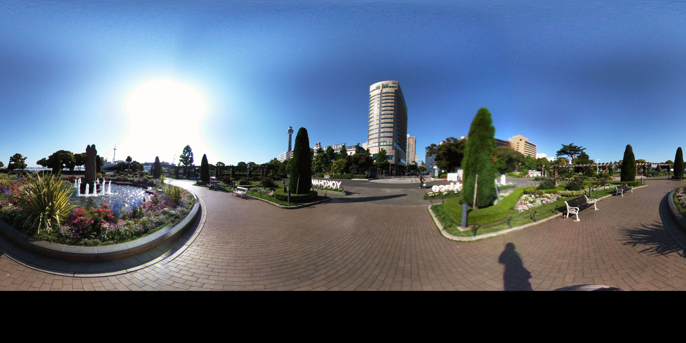
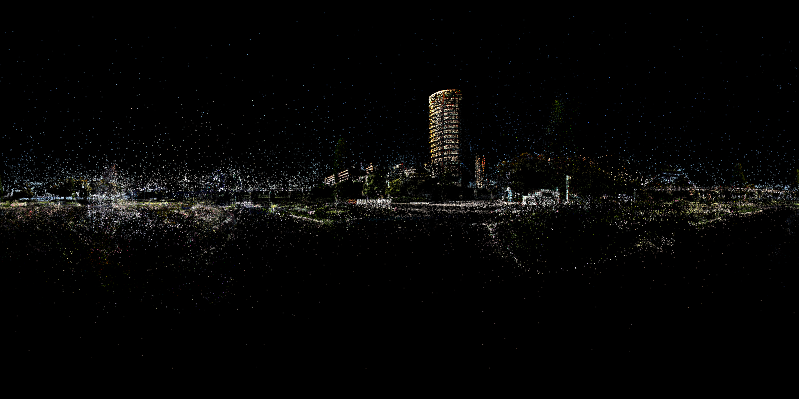

A Comprehensive Analysis of Gaussian Splatting Rasterization
Posted by
Hwan Heo
on August 08, 2024
Introduction
Figure 1. 3D GS by Luma AI
One of the most significant advantages of 3D Gaussian Splatting lies in its exceptional rendering speed, exceeding 100 frames per second (fps).
This performance, faster than any other NeRF-based method, is achieved through a well-designed tile-based rasterization process.
This article aims to explore 3D Gaussian Splatting from the perspective of rasterization, providing an in-depth understanding of its underlying mechanisms.
The basic idea of 3D Gaussian Splatting is to represent a scene with explicit, learnable primitives, contrasting with the implicit approach utilized in NeRF (Neural Radiance Fields).
The explicit representation offers several advantages, as discussed in a previous review of 2D Gaussian Splatting
(please refer to the linked article. for more details).
The authors define the kernel for these primitives (particles) using the following 3D Gaussian function:
The choice of the kernel design is justified by several factors outlined in the paper:
Differentiability for Training: The function's differentiability facilitates gradient-based optimization during the training process.
Ease of Projection to 2D: The Gaussian function allows for straightforward and well-defined projection to 2D, enabling fast alpha blending.
The covariance matrix $\Sigma$ is critical in defining the kernel's shape, and its physical meaning is preserved only if it is positive definite.
The authors suggest organizing the covariance matrix in the following form to facilitate learning:
$$ \Sigma = RSS^{\rm T}R^{\rm T} $$
Here, $R$ and $S$ are ${3 \times 3}$ rotation and scale matrices, respectively.
This formulation can be further rewritten to emphasize its equivalence to the 3D ellipsoid (anisotropic) matrix, implying that 3D Gaussian Splatting employs an semitransparent ellipsoid in 3D space,
with density defined by a Gaussian distribution, as its primitive kernel.
Tip. When dealing with quadratic forms like ($A^{-1}MA$), it is often insightful to interpret $M$ as a transformation within the coordinate system defined by $A$.
This perspective is also applicable to eigendecomposition, which analyzes the significance of each axis (eigenvalues) in a coordinate system where the axes' orientation (eigenvectors) remains unchanged under linear transformation.
This understanding elucidates the relationship between Principal Component Analysis (PCA) and eigendecomposition.
In summary, the covariance matrix $\Sigma$ can be interpreted as:
An intensity matrix (squared scale) within the coordinate system where each principal axis of the ellipsoid serves as a basis.
A method of expressing the primitive kernel in the world coordinate system.
// compute 3D covariance matrix
glm::mat3 S = glm::mat3(1.0f);
S[0][0] = mod * scale.x;
S[1][1] = mod * scale.y;
S[2][2] = mod * scale.z;
glm::mat3 R = glm::mat3(
1.f - 2.f * (y * y + z * z), 2.f * (x * y - r * z), 2.f * (x * z + r * y),
2.f * (x * y + r * z), 1.f - 2.f * (x * x + z * z), 2.f * (y * z - r * x),
2.f * (x * z - r * y), 2.f * (y * z + r * x), 1.f - 2.f * (x * x + y * y)
);
glm::mat3 M = S * R;
glm::mat3 Sigma = glm::transpose(M) * M;
cov3D[0] = Sigma[0][0];
cov3D[1] = Sigma[0][1];
cov3D[2] = Sigma[0][2];
cov3D[3] = Sigma[1][1];
cov3D[4] = Sigma[1][2];
cov3D[5] = Sigma[2][2];
To render a 3D scene onto a 2D image, it is necessary to project the covariance matrix of the Gaussian.
The authors address this projection using a method proposed in Elliptical Weighted Average (EWA) Splatting:
$$ \Sigma^{\prime} = JW\Sigma (JW)^{\rm T} $$
This transformation can be understood through the same aspect as quadratic forms: converting the covariance matrix from world coordinate system → camera space → ray space.
Here, $J$ represents the Jacobian matrix (affine approximation) of the perspective projection, transforming coordinates from camera space to ray space.
The approximated transformation $\phi$ is represented as
$$ \phi(x) = \phi(t) + J \cdot (x - t). $$
As this is a first-order Taylor approximation, there should be an approximation error as a point moves away from the center of the Gaussian.
Recent studies have highlighted this perspective error as a limitation of Gaussian Splatting and proposed methods to address it.
The Jacobian matrix $J$ for the perspective projection is derived as follows:
Rendering relies on this Gaussian density value multiplied by an opacity value $\sigma(\alpha_i)$.
This equation represents a weighted (by opacity) probability density function for a multivariate (3D) normal distribution.
The inner exponential term corresponds to the Mahalanobis Distance,
which quantifies the distance (or similarity) within an ellipsoid based on its scale.
Intuitively, the closer a 3D point is to the Gaussian center, the more opaque the Gaussian appears, leading to a higher response.
To calculate the density value, the inverse of the projected covariance matrix is required.
The following code snippet illustrates the implementation, incorporating linear algebra techniques to ensure numerical stability.
Recap the earlier computation to get 2D covariance matrix.
The actual end of this code is implemented as follows,
which is the same as finding the inverse of the following inverse matrix, $(A=(RS)^{\rm T})$
$$ A^{\rm T}A+\lambda \mathbf{I} $$
Since the covariance matrix is positive semidefinite, adding a small $\lambda$ ensures that the covariance matrix remains positive definite, preventing numerical instability during matrix inversion.
$$
x^T A^T Ax + \lambda x^T x > 0
$$
Note that the inverse matirx formula for 2x2 matrix is
$$
A=\begin{bmatrix}
a & b \\
b & c
\end{bmatrix},
\quad
A^{-1} = \frac{1}{\det(A)}
\begin{bmatrix}
c & -b \\
-b & a
\end{bmatrix}
$$
Also note that the inverse of cov is called conic, presumably because the definition of conic section.

Finally, the radius of each splat is calculated to ensure it covers at least 99.7% of the Gaussian distribution:
$$ r = 3 \times \max_i \textit{standard deviation}_i
$$
It is used for Gaussian culling (masking) purposes. (Otherwise, you would have to query all Gaussians in the scene....)
The standard deviation of the 3D Gaussian, defined by the covariance matrix, corresponds to the eigenvalue,
which can be obtained using the following Characteristic equation:
$$
\det \left ( A -\lambda \mathbf{I} \right ) = 0, \\ \rightarrow (a- \lambda)(c-\lambda) - b^2 = 0.
$$
Since this is a quadratic equation for $\lambda$, it has the famous closed form solution :) The code also uses the quadratic formula to find the value of the lambda.
Having established the Gaussian kernel and its projection into image space, we can proceed with rasterizing the 3D scene.
The goal is to efficiently render a 3D Gaussian Splatting scene as a 2D image by accumulating density and opacity values of Gaussians that intersect with the camera's ray.
3D Gaussian Splatting employs a tile-based rasterization approach, leveraging the hardware capabilities of GPUs to parallelize the computation. Each tile is processed independently, with its own set of Gaussian primitives.
The final image is obtained by blending the contributions from all tiles, ensuring that overlapping Gaussians are handled correctly to prevent artifacts such as holes or seams in the rendered image.
The rasterization algorithm presented in the 3D Gaussian Splatting paper is a key element in achieving its remarkable rendering speed.
Let’s break down the algorithm step-by-step:
Tile-Based Division.
The first step involves dividing the screen into 16x16 size tiles.
This division is essential for CUDA parallelization, enabling efficient rasterization by allowing the GPU to process multiple tiles simultaneously.
Frustum Culling.
Once the screen is divided into tiles, the algorithm performs frustum culling.
This step involves discarding Gaussians that fall outside the camera's view frustum, ensuring that only relevant Gaussians are processed.

Instantiation of Gaussians. (Instantiate)
Gaussians that overlap with multiple tiles are duplicated, a process known as instantiation.
This ensures that each tile contains all relevant Gaussians for accurate rendering.
Sorting the Gaussians (in each tile) in depth order.
For each tile, the Gaussians are sorted in depth order using a GPU-accelerated radix sort.
Sorting is crucial because the covariance matrix used for rendering is already projected into image space.
Without depth sorting, the rendering would result in visually disordered overlapping Gaussians.
Importantly, this sorting is done before the execution of each CUDA thread block, ensuring that primitives are pre-sorted, rather than sorting them on a per-tile basis during rendering.
Parallel Rasterization.
The next step involves setting the working range for each tile using the sorted Gaussians. CUDA thread blocks are then deployed in parallel, with each block responsible for rasterizing a specific tile.
To minimize memory bottlenecks, thread blocks store necessary information, such as Gaussian properties, in shared memory.
The final color value for each pixel is calculated by accumulating opacity and color along the sorted Gaussians.
The __shared__ variable is utilized to store variables like IDs, opacity values, and pixel coordinates. The relevant data, including the projected covariance and spherical harmonics color of each Gaussian, is precomputed and stored in shared memory before the rasterization of each tile begins.
// Allocate storage for batches of collectively fetched data.
__shared__ int collected_id[BLOCK_SIZE];
__shared__ float2 collected_xy[BLOCK_SIZE];
__shared__ float4 collected_conic_opacity[BLOCK_SIZE];
Also, The color accumulation process, which calculates the final color at pixel $x$ can be mathematically expressed as:
$$
C(\mathbf{x}) = \sum_{i \in N} T_i \, g_i^{2D}(x) \, \alpha_i \, \mathbf{c}_i , \quad \text{where } T_i = \prod_{j=1}^{i-1} \left(1 - g_j^{2D}(x) \, \alpha_j\right)
$$
This formula highlights a key difference from NeRF-based methods:
NeRF requires sampling points along the ray and querying a Multi-Layer Perceptron (MLP) for the opacity and color at each point.
3D Gaussian Splatting accumulates these values while traversing through the pre-sorted Gaussians projected onto the tile.
In other words, since NeRF samples rays, it queries the MLP for each different point sampled by $r(t)$ (3D), whereas 3D GS queries the MLP for the same point $x$ (2D).
4. Miscellaneous
4.1. Camera Model
In the current implementation, the matrix $J$ serves as an approximation of the perspective projection
in a pinhole camera model. Consequently, it is not suitable for rendering images using different
camera models. To support other camera models, appropriate approximations must be developed.
For instance, an affine approximation $J$ for a spherical camera model (i.e., equirectangular projection)
can be formulated as follows:
This approximation enables the rasterization of 360-degree images with 3D Gaussian Splatting's Rasterization,
as shown in the following table:
360 Image
Rasterization


However, it is important to note that the approximation error in this case is significantly larger
than that of the perspective projection. As a result, the reconstruction quality is inferior
when using spherical camera models compared to pinhole images.
The article's teaser video showcases a rendering by Luma AI, a company founded by the NeRFStudio team.
I recently came across this fascinating 3D scene rendering and decided to give it a try.
Here’s a brief overview of my approach:
Render with Near-to-Far Plane: Loading the point cloud (within blakc background) by traversing from the near to the far plane of the current view frustum.
Radius-Based Rendering: Increase the radius from the center (typically defined as the mean of the training camera positions, though it can be set manually) and render only the splats within the sphere defined by this radius.
Scene #1
Scene #2
Closing
In this article, we have explored the intricacies of 3D Gaussian Splatting within the context of
rasterization, highlighting its exceptional rendering speed and efficiency.
We delved into the mathematical foundations of the technique, examining the role of the 3D Gaussian function
as a primitive kernel and its implications for differentiability, projection, and opacity.
The transformation of the 3D covariance matrix into image space was crucial
in achieving smooth and visually coherent results.
Note that, this article focuses on the forward function of the diff-gaussian-rasterizer by the INRIA group,
but the actual implementation also includes the calculation of RGB colors from Spherical Harmonics, allocation of CUDA thread blocks, and backward through the rasterization process.
The backward is almost the inverse of the forward computation described above, computing the gradient while traversing back-to-front as opposed to front-to-back in the forward step.